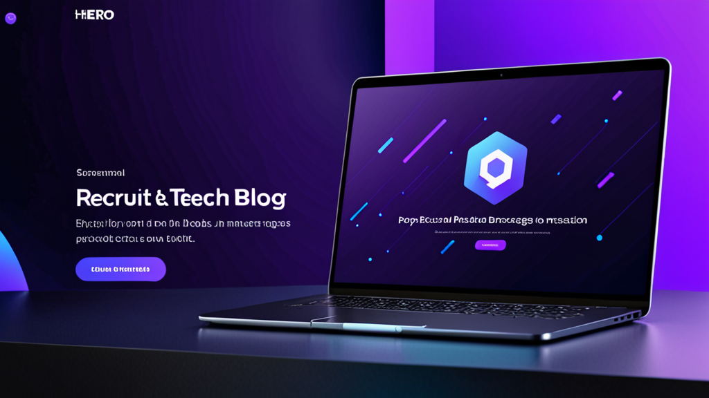

Las Mejores Herramientas de Respuesta con IA para Mensajes de Reclutamiento: Guía para un Outreach Más Inteligente
Si has pasado más de diez minutos escribiendo un mensaje personalizado en LinkedIn para un candidato pasivo, conoces el dolor. Quieres que suene humano, que haga referencia a su experiencia específica e incluya el call to action correcto, sin pegar accidentalmente el nombre de la empresa equivocada.
Las mejores herramientas de respuesta con IA para mensajes de reclutamiento resuelven exactamente este problema. Te ayudan a redactar un outreach que se sienta personal, no como una plantilla. Pero no todas las herramientas funcionan igual, y saber usarlas de forma efectiva marca la diferencia entre sonar a robot o sonar a un reclutador que realmente hizo la tarea.
Esta guía cubre qué buscar en un asistente de IA para reclutadores, cómo usarlo sin perder tu voz y consejos prácticos para mejorar tus tasas de respuesta.
Por Qué los Reclutadores Necesitan una Mejor Forma de Escribir Mensajes
Los reclutadores envían decenas —a veces cientos— de mensajes cada semana. Cada uno requiere cambiar de contexto: revisar el perfil del candidato, consultar la descripción del puesto y redactar un mensaje que destaque en una bandeja de entrada abarrotada.
¿El resultado? Muchos reclutadores recurren a plantillas genéricas. Los candidatos las detectan al instante. Según datos de LinkedIn, las tasas de respuesta de InMail rondan el 20-25 %, y ese número cae drásticamente cuando el mensaje parece producido en masa.
Un generador de mensajes para reclutadores no solo ahorra tiempo. Te ayuda a mantener la calidad a gran volumen. Cuando puedes generar un borrador que incluya el puesto del candidato, su industria y un detalle relevante de su perfil, es más probable que obtengas una respuesta.
¿Qué Hace a las Mejores Herramientas de Respuesta con IA para Mensajes de Reclutamiento?
No todas las herramientas de escritura con IA están diseñadas para reclutamiento. Antes de elegir una, esto es lo que debes buscar:
1. Comprensión del Contexto
La herramienta debe entender quién eres, quién es el candidato y qué puesto estás buscando. Los chatbots de IA genéricos que no consideran el contexto producirán borradores vagos e inútiles.
2. Control de Tono
Necesitas la capacidad de ajustar el tono: desde profesional y formal hasta casual y directo. Una herramienta de outreach para candidatos que solo escriba en un estilo no funcionará para diferentes roles e industrias.
3. Integración con Plataformas
Las mejores herramientas funcionan donde ya operas: LinkedIn Recruiter, Greenhouse, Lever, Workday. Tener que copiar y pegar entre pestañas anula el propósito de la automatización.
4. Privacidad y Control
Nunca deberías preocuparte de que tu clave API quede expuesta o de que tus mensajes se envíen automáticamente. Las mejores herramientas de respuesta con IA para mensajes de reclutamiento te dan control total sobre lo que se envía y mantienen tus datos de forma local.
Cómo Usar un Asistente de IA para Reclutadores Sin Sonar a IA
Incluso la mejor herramienta puede producir un texto rígido si no la guías. Así es como mantienes un toque humano:
Empieza con un Prompt Sólido
No te limites a pulsar "generar". Proporciona a la herramienta detalles específicos:
- Puesto y empresa actual del candidato
- Un proyecto o logro concreto de su perfil
- Por qué este puesto es relevante para su trayectoria profesional
Ejemplo de prompt:
"Escribe un mensaje corto de LinkedIn para un Senior Product Manager en Spotify. Menciona su trabajo en personalización de funciones. El puesto es para Product Lead en una fintech en Serie B. Tono: amigable pero profesional."
Edita el Resultado
Siempre lee el borrador antes de enviarlo. Elimina cualquier frase que suene artificial. Añade una pregunta u observación personal que solo tú notarías. La IA es un punto de partida; tu voz termina el mensaje.
Usa Diferentes Plantillas para Diferentes Etapas
Un mensaje de outreach en frío no debería sonar como una carta de rechazo. Un asistente de IA para reclutadores debería permitirte alternar entre:
- Outreach inicial
- Seguimiento (si no hay respuesta)
- Invitación a entrevista
- Rechazo o actualización
Cada etapa requiere un tono y nivel de detalle diferente.
Ejemplos Prácticos: Antes y Después de la Asistencia de IA
Veamos escenarios reales donde una herramienta de IA mejora el mensaje.
Outreach en Frío
Antes (plantilla genérica):
"Hola [Nombre], vi tu perfil y creo que encajarías muy bien en un puesto de nuestra empresa. Avísame si te interesa."
Después (con asistente de IA para reclutadores):
"Hola Sarah, me llamó la atención tu trabajo en retención de usuarios en HubSpot, especialmente la campaña que redujo la rotación un 12%. Estamos formando un equipo de crecimiento similar en una empresa Serie A y podríamos necesitar tu experiencia. ¿Abierta a una charla rápida esta semana?"
El segundo mensaje menciona trabajo específico, demuestra investigación y hace una pregunta clara. Esa es la diferencia entre un "eliminar" y una respuesta.
Seguimiento
Antes:
"Solo te hago un seguimiento de mi mensaje anterior. Avísame si te interesa."
Después:
"Hola Sarah, sé que estás ocupada, así que seré breve. Si el momento no es el adecuado, no te preocupes. Pero si sientes curiosidad por el puesto, me encantaría darte más detalles. De cualquier forma, agradezco que lo consideres."
Este seguimiento reconoce el tiempo del candidato y elimina la presión, lo que a menudo genera una respuesta.
Consejos para Mejorar las Tasas de Respuesta de los Candidatos
Usar las mejores herramientas de respuesta con IA para mensajes de reclutamiento es solo una parte de la ecuación. Aquí tienes estrategias adicionales para mejorar tu outreach:
Personaliza Más Allá del Perfil
Menciona algo de su publicación reciente, una conexión en común o una conferencia a la que asistieron. La IA no siempre captura estos matices; agrégalos manualmente.
Mantenlo Breve
Los candidatos leen mensajes en el móvil. Apunta a un máximo de 3-5 frases. Si tu borrador de IA es más largo, recórtalo.
Incluye una Solicitud de Bajo Esfuerzo
En lugar de "¿Podemos agendar una llamada?", prueba con "Encantado de compartirte la descripción del puesto si tienes curiosidad". Menor compromiso = mayor respuesta.
Usa un Asunto Claro (para Email)
Si usas un ATS como Greenhouse o Lever, tu mensaje podría llegar a su bandeja de entrada. Usa un asunto como "Una pregunta sobre tu experiencia en [Empresa]" — no "Oportunidad laboral".
Por Qué la Automatización en Reclutamiento Debe Seguir Siendo Humana
Algunos reclutadores se preocupan de que usar IA los haga menos auténticos. Es todo lo contrario. Cuando automatizas las partes repetitivas de la escritura, liberas energía mental para lo que importa: leer el perfil del candidato, pensar en su encaje y construir una relación.
Una herramienta de automatización para reclutamiento debe encargarse de escribir, no de pensar. Las mejores herramientas respetan ese límite.
Cómo Elegir la Herramienta Adecuada para tu Flujo de Trabajo
Si estás evaluando opciones, considera cómo encaja la herramienta en tu rutina diaria. ¿Pasas la mayor parte del tiempo en LinkedIn Recruiter? ¿O vives dentro de un ATS como Workday o Lever? Las mejores herramientas de respuesta con IA para mensajes de reclutamiento se integran perfectamente en tu flujo de trabajo existente, no como una aplicación aparte que debes recordar abrir.
También considera la seguridad. Si tu organización maneja datos sensibles de candidatos, necesitas una herramienta que procese la información de forma local y no almacene mensajes en servidores externos. Un diseño centrado en la privacidad importa más que las funciones llamativas.
Una herramienta que cumple con estos requisitos es RecruitReply AI — funciona dentro de LinkedIn Recruiter y las principales plataformas ATS, usa IA en el dispositivo y nunca envía mensajes automáticamente. Pero independientemente de la herramienta que elijas, los principios de esta guía aplican.
Reflexiones Finales
Las mejores herramientas de respuesta con IA para mensajes de reclutamiento no buscan reemplazar a los reclutadores. Se trata de eliminar fricciones. Cuando puedes generar un borrador personalizado y de sonido humano en segundos, envías mejores mensajes, de forma más consistente y con menos esfuerzo.
Eso se traduce en tasas de respuesta más altas, mejores relaciones con los candidatos y más tiempo para las partes estratégicas del reclutamiento que realmente importan.
Si estás listo para probar una herramienta que respete tu flujo de trabajo y la privacidad de tus candidatos, echa un vistazo a RecruitReply AI. Está diseñada para reclutadores que quieren escribir mejores mensajes — más rápido — sin perder su voz.